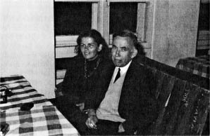

Sevgili Huriye,
Saat 13:00, gündüz. Çarşıya inip öteberi alacaktım. Kutuda 9 Ağustos tarihli mektubunuzu buldum, tekrar çıktım yukarı. Daha önce bir mektup yazılmış, duruyordu. Onunla gönderilmek üzere bu satırları yazıyorum.
Burası iyidir. Şu on gün içinde Hamsun’un daktilosunu bitirip başımdan atmak istiyorum onu. Öbür mektupta yazdım: Beyaz Geceler yattı. Evvelsi gün akşama doğru babam uğradı. Ben şimdi bir kapı çalındı mı mutfak ve banyo kapılarını kapatıyorum hemen, öyle açıyorum kapıyı. Karşı sıradaki marangoza gelmiş, uğramış bana da. Salonda oturacaktı, oda daha serin dedim, odaya aldım. Benim koltuğa oturdu. Tam karşıda, birden aklıma geldi, ALACA tablosu[92]. Baktı, gördü, güldü hafif, bir şey diyecekti, vazgeçti. Sabahat bugün yarın geliyormuş. Ordan burdan konuştuk, o da, ben de memnun ayrıldık. Ben bu evi görmemiştim, bir göreyim dedi, kapalı kapıların ardında biri mi var sandı, yoksa bir ihbar yapıldı da baskına mı geldi ne? Açtım, gösterdim, temizdi her taraf. Hoşuna gitti.
İzmir’e gidecekseniz, benden size izin, gidin. Yalnız, o Turgay’la[93] nasıl başedeceksiniz? Masrafa sokmayın onu, kendi masrafınızı kendiniz verin!
Fazla yazmıyorum, bu satırlar zaten mektubunuzu aldığımı belirtmek için yazıldı. İyiyim, iyi olasınız!
B.

Bursa Uludağ, Beceren Oteli’nde (Eylül 1968).